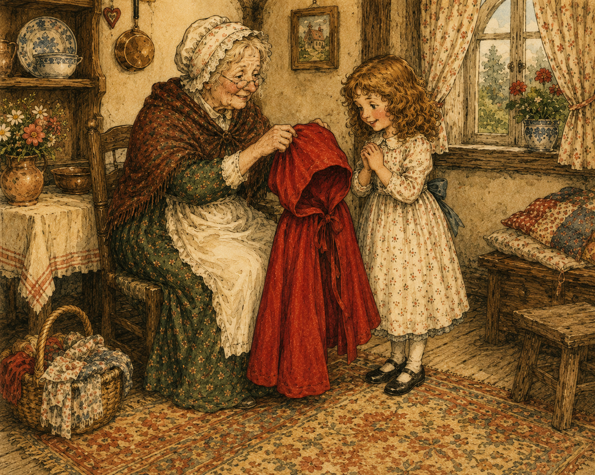
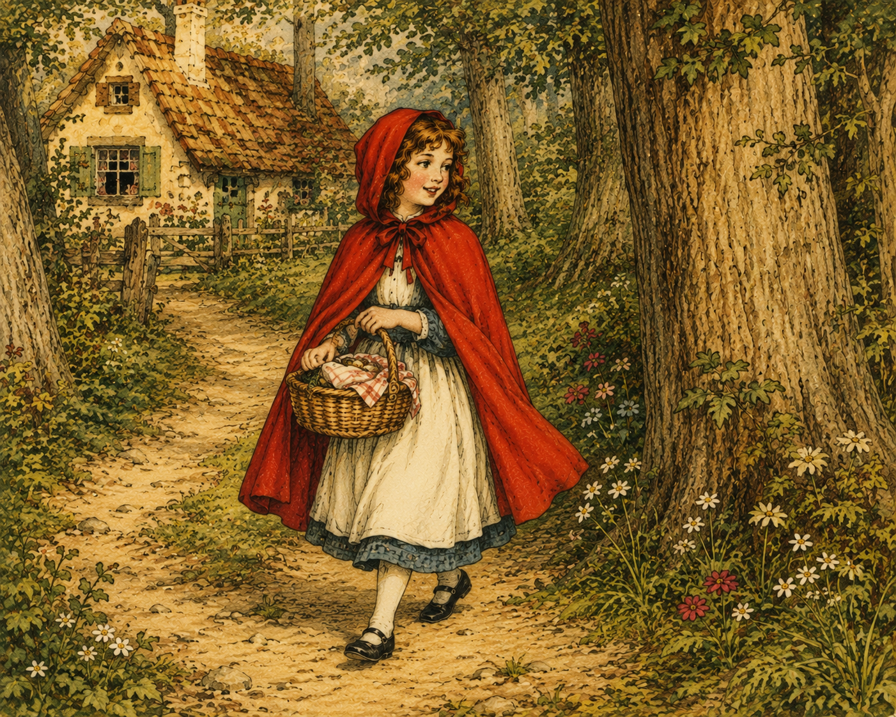
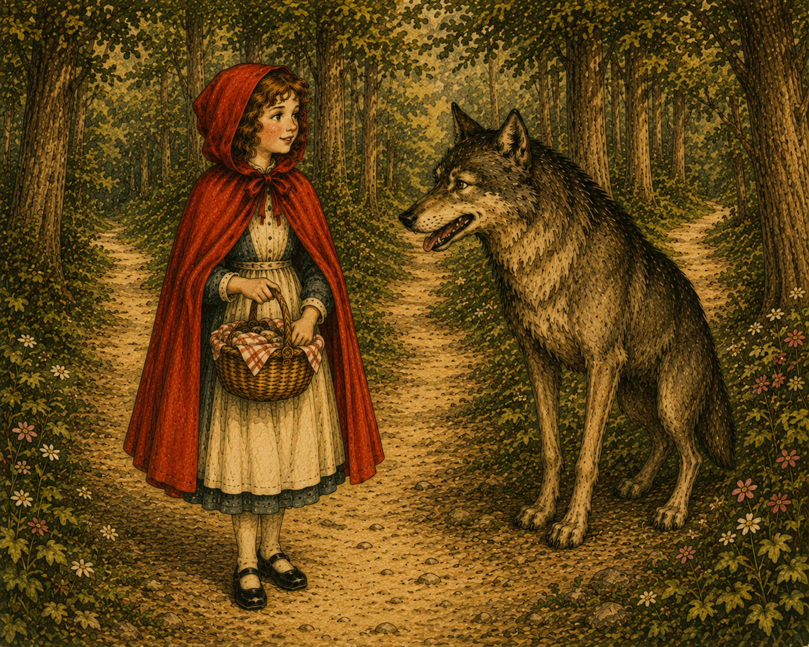

1. El regalo de Caperucita Roja
Había una vez una dulce niña que quería mucho a su madre y a su abuela. Siempre estaba dispuesta a ayudar en casa y era amable con todas las personas que conocía. El día de su cumpleaños, su abuela le regaló una hermosa caperuza roja que la niña recibió con mucha alegría. Le gustó tanto aquel regalo que comenzó a llevarlo todos los días, sin importar el lugar al que fuera. Con el paso del tiempo, los vecinos dejaron de llamarla por su nombre y empezaron a conocerla como Caperucita Roja. La pequeña estaba muy orgullosa de su caperuza y nunca imaginó que viviría una gran aventura gracias a ella.

El encargo para la abuelita
Un día, la abuela de Caperucita, que vivía sola en una casita en medio del bosque, enfermó y necesitó ayuda. La madre de Caperucita preparó una cesta con una deliciosa torta y un tarro de mantequilla para que se recuperara pronto. Antes de despedirse, quiso asegurarse de que su hija tuviera cuidado durante el camino.
- Ten mucho cuidado, Caperucita, y no te entretengas en el bosque.
- ¡Sí, mamá!
La niña tomó la cesta y comenzó a caminar por el sendero que conducía a casa de su abuela. El bosque era tranquilo y hermoso, pero también podía ser un lugar peligroso para quien no seguía las recomendaciones de los mayores.

El encuentro con el lobo
Mientras caminaba entre los árboles, Caperucita se encontró con un lobo que la observaba con atención. El animal fingió ser amable para ganarse su confianza y se acercó a conversar con ella.
- ¿Dónde vas, Caperucita?
- A casa de mi abuelita a llevarle esta cesta con una torta y mantequilla.
- Yo también quería ir a verla. ¿Por qué no hacemos una carrera? Tú ve por ese camino y yo iré por este otro.
- ¡Vale!
Sin sospechar nada, la niña aceptó la propuesta. El lobo la envió por el camino más largo y él corrió rápidamente hacia la casa de la abuela, pues había ideado un plan para adelantarse.
